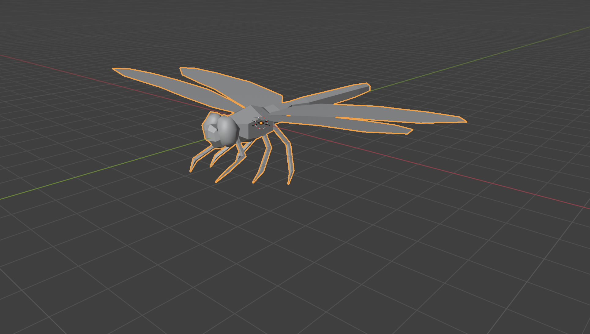

Umwelt
"Umwelt" is the an organism's unique viewpoint, which is influenced by its perceptual systems and sensory organs. This project seeks to provoke the user to consider ethical and philosophical issues, such as "Is the ideal world I am imagining for myself also ideal for another species?" and "How does my perception shape the way I think?". Additionally,the project seeks to assist the user in finding their place in the world, on an equal footing with all of their neighbours.


Technical Description
The project is a rotating cube that is interactive and projection mapped. Each vertical face displays a game world created using Unity that reflects the digital environments of four distinct animals: birds, dogs, octopuses, and bats. Rotation is done manually, and the rotation data is read by an autoencoder, which subsequently delivers it to Unity and Touhdesigner (for projection mapping).
The user can join the scenario and navigate in a playable manner by spinning the cube to explore the sensory views of four distinct animals, as shown in the diagram below.


Proccess
Phase I: Ideation
Branstormed, created a research question and used various resources to gain knowledge on technical and theoretical details. Finally, created a common design language for representing different species.


Phase II: Building Each Scene
The Bat Scene
Character Model and Animation
We decided to use pack of characters that fit with our visual composition, from the Unity Asset Store. Unfortunately this pack did not contain a bat, therefore I decided to turn the mouse model into a bat. I found another bat model online to make use of wings. In blender,where I merged a bat model's wings with to the mouse. I made the ears of the mouse bigger. However this proccess caused the existing animation in the wings to be lost. Therefore I reanimated the wings using rigs.

Terrain Model
Later, I modeled a sample scene that the whole group can use together, inspired from the visual moodbard we have created. I imagined each of us would add our own assets to emphasize our interactions, however the general look would be the same. I used Blender to model the terrain.

Shader
I wanted to create the echovisualization effect, with a terrain scan effect that are used in the games like Death Strand. I imagined I can use this effect in a poorly lit game environment to make things visible.
I mostly used the last tutorial in the list, and this link provided by the creator of the video. I firstly tried to use the Blit Script that was provided in the video however this did not work with the Unity version that I am using. Instead I used a Full Screen Pass Renderer inside a URP Renderer with a Full Screen Shader. I used the link provided above to create the "World Position from Depth" shader. Below, is the node based diagram for the shader.


Infinite Runner Game Mechanics
I finally created a game environment where the bat will navigate through scanning the obstacles and the prays. I decided to use the infinite runner game mechanics to provide an endless navigation and exploration using the echolocation. I used these video series to understand how I can construct an endless runner game from scratch. I integrated the terrrain scan shader to the game.
Player Avatar
I exported the animated bat model from Blender to Unity, the animation didnt work at first. Therefore I watched a tutorial to fix this issue. When the animation started working in Unity, I replaced the player capsule with the bat model.
I coded a tilting effect in the to player script in horizontal movements to give it a more organic flying effect. I asked ChatGPT how to code it. I decided to give the player a vertical movement to make it easier to catch the rewards (bugs) and runaway from obstacles. Finally I put a limited to the distance of horizontal and vertical movement, for the player to stay in the runway all the time.
Rewards
A dragonfly model was imported into Blender, edited it for better rendering, exported into to Unity.

I wanted the dragonfly to move organically Therefore I used a tutorial which allowed me to write a script to make it move in an organic way (8 shape movement). This made the dragonfly movement more realistic. However made it hard to catch it in the playing experience. I decided to work on this issue in the upcoming weeks.
Obstacles
Collision capsules are added around the obstacles. A script where the scene will restart once the player hits the obstacles, was written
Phase III: The Digital Cube

Merging Each Scene on Digital Cube

The Physical Cube

Phase IV: The Rotation Mechanism (AutoEncoder)
Phase V: Touchdesigner to Unity Communication
An external package for Unity named KlakSpout is used for Touchdesigner to Unity communication. Later, KantanMapper in Touchdesigner is used for projection mapping. (The screenrecorder only recorded the active software. Therefore the videos do not match. In the original process, the communication is seamless)
Phase VI: Projection Mapping
Once the communication between Unity and Touchdesigner is established, KantanMapper in Touchdesigner is used for projection mapping. However however there was a lag in the data coming in from the serial port once the projector was connected.